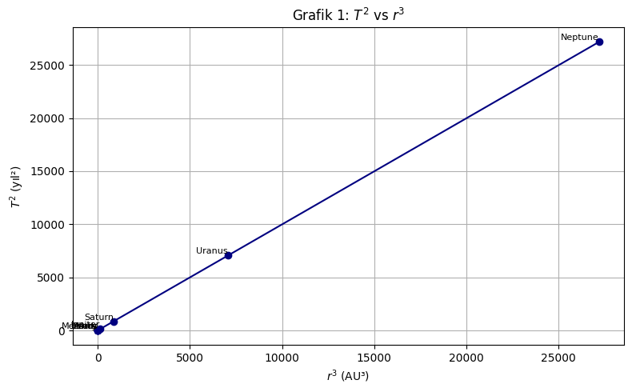
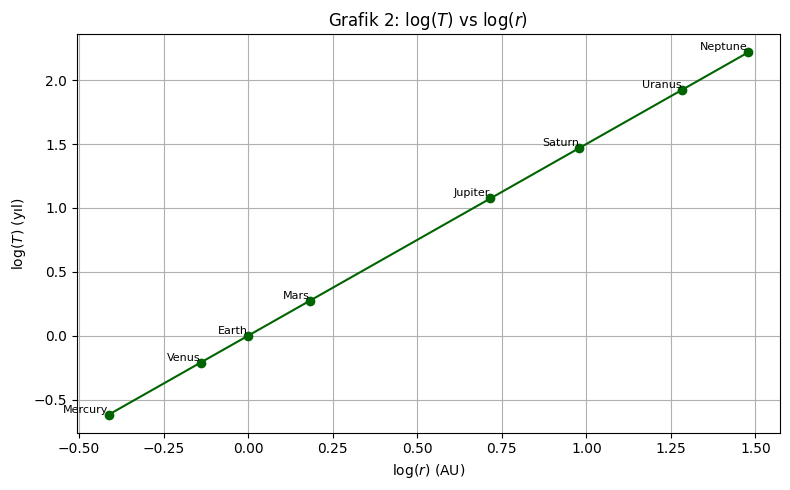
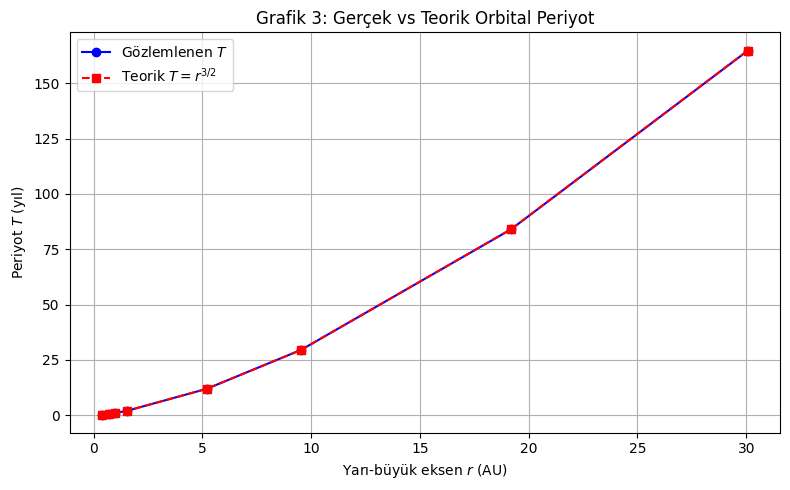
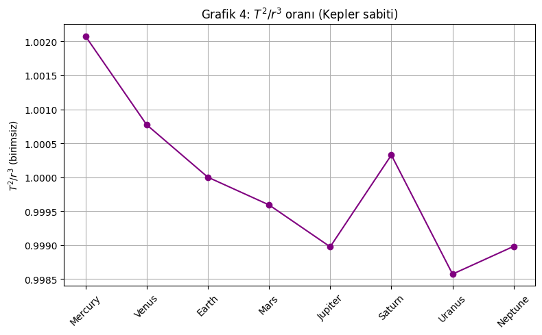

Problem 1: Orbital Period and Orbital Radius
🔹 Derivation of the Relationship
For a body in a circular orbit around a much more massive central body (like a planet orbiting the Sun), the force keeping it in orbit is gravity. This gravitational force also acts as the centripetal force required for circular motion.
The gravitational force between two objects is:
where:
- \(M\) is the mass of the central object
- \(m\) is the mass of the orbiting object
- \(r\) is the orbital radius
- \(G\) is the gravitational constant
The centripetal force needed for circular motion is:
Setting the two forces equal:
Cancel \(m\) and solve for \(v\):
The orbital period \(T\) (time to complete one orbit) is related to velocity:
Substitute \(v\):
Squaring both sides gives:
This is Kepler’s Third Law:
The square of the orbital period is directly proportional to the cube of the orbital radius.
🔹 Implications for Astronomy
Kepler's Third Law is central to understanding how celestial bodies move. Key implications:
- Predict distances: Knowing an object’s period lets us find how far it is from its star or planet.
- Determine masses: Observing orbits allows calculation of the central body's mass.
- Design satellite orbits: Engineers plan orbits using this law.
- Model planetary systems: It maps orbits in both our solar system and exoplanetary systems.
🔹 Real-World Examples
🌙 The Moon and Earth
- Orbital period: ~27.3 days
- Orbital radius: ~384,400 km
- Kepler’s Law predicts this motion accurately, just like with artificial satellites.
☉ Planets in the Solar System
- Earth: \(T = 1\) year, \(r = 1\) AU
- So:
- Jupiter: \(r \approx 5.2\) AU, \(T \approx 11.86\) years — this fits the law too.
📡 Artificial Satellites
- Closer satellites (e.g., ISS): orbit in ~90 minutes
- Farther ones (e.g., GPS): orbit in ~12 hours
🔹 Graphical Relationship
If we graph:
- \(T^2\) (orbital period squared) on the vertical axis
- \(r^3\) (orbital radius cubed) on the horizontal axis
The result is a straight line:
This confirms Kepler’s Third Law visually and mathematically.
🔹 Extension to Elliptical Orbits
Kepler’s Third Law also applies to elliptical orbits. In this case:
Where:
- \(a\) is the semi-major axis (average orbital distance)
- \(M\) is the central mass
- \(m\) is the orbiting mass (often negligible compared to \(M\))
This general form explains:
- Planets with elliptical orbits
- Comets with stretched orbits
- Binary star systems
✅ Summary
- Kepler’s Third Law: \(T^2 \propto r^3\)
- Helps us measure distances and masses in space.
- Applies to natural and artificial satellites.
- Valid for elliptical orbits using the semi-major axis.
- Confirmed by observations of the Moon, planets, and satellites.



